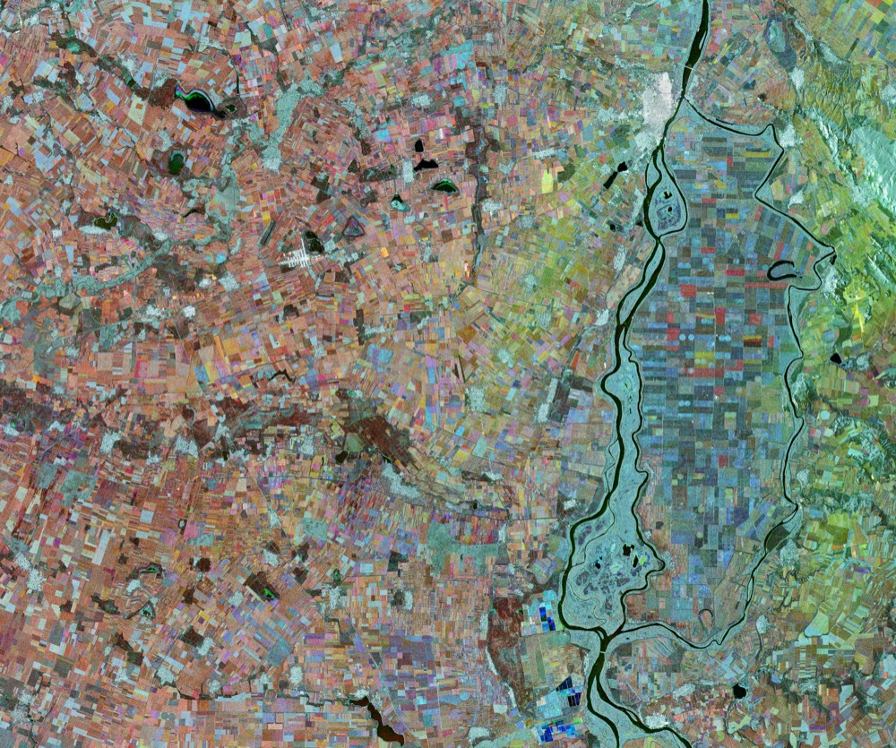
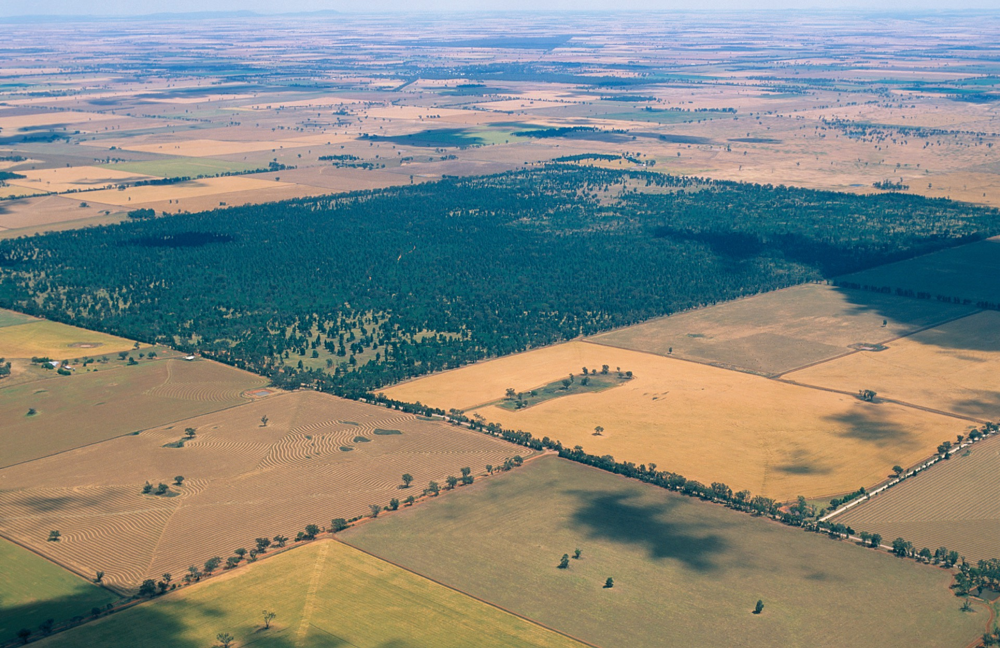
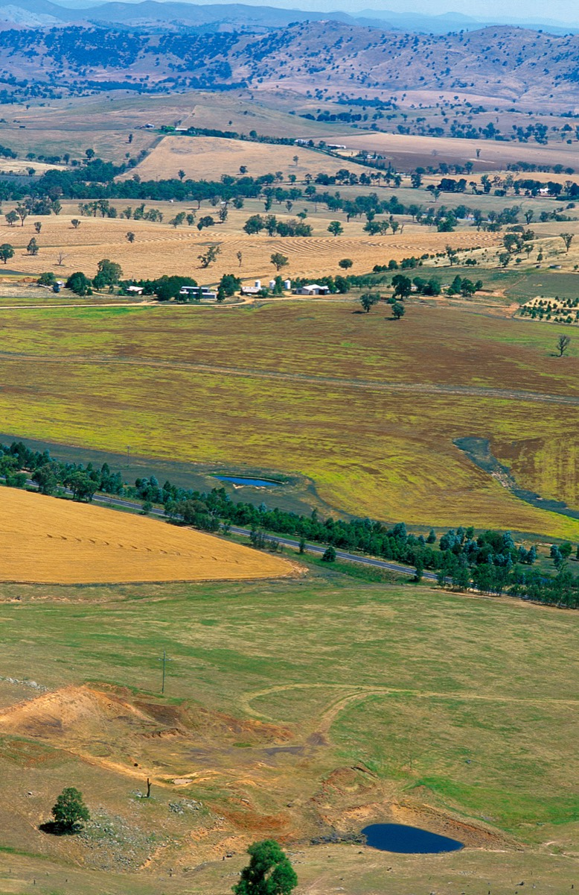
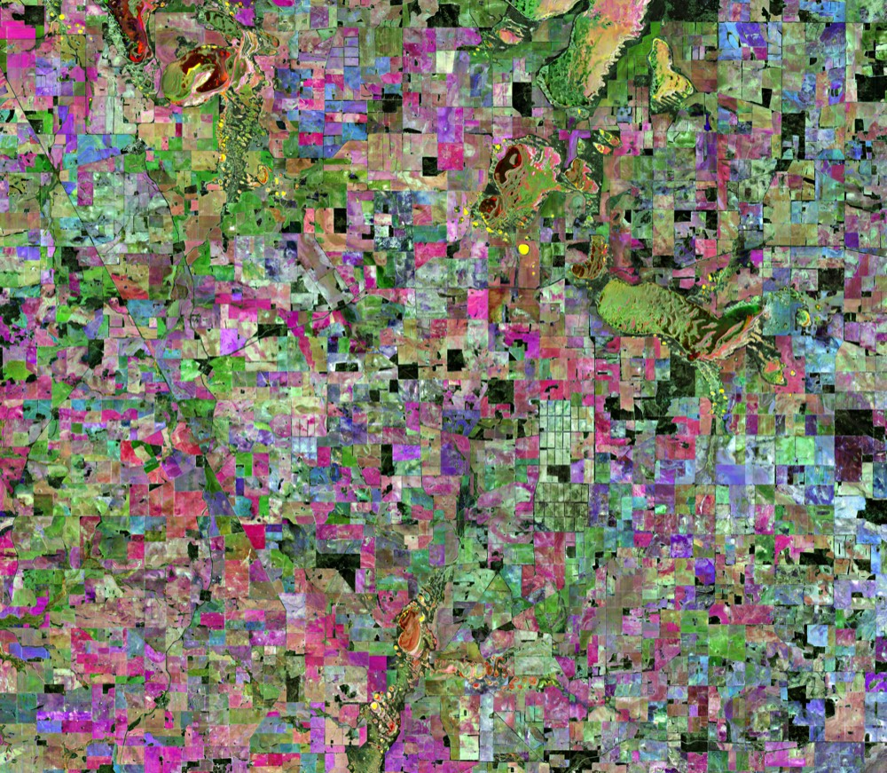
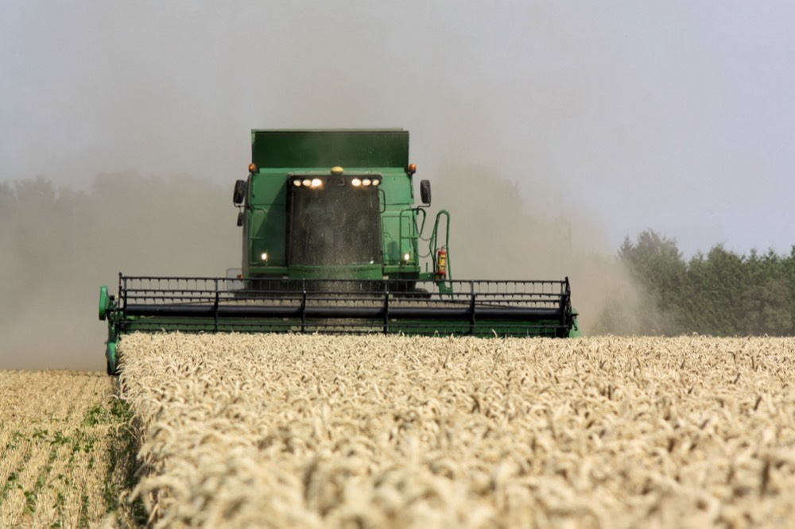
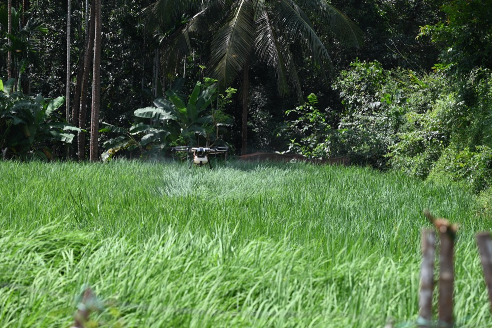
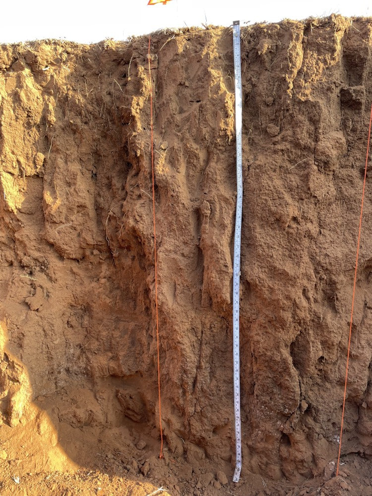
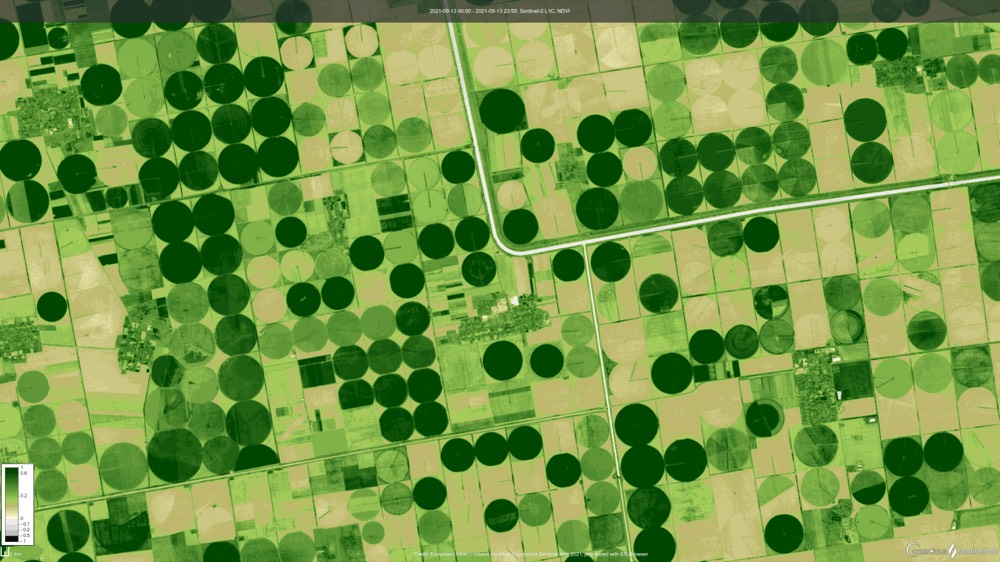
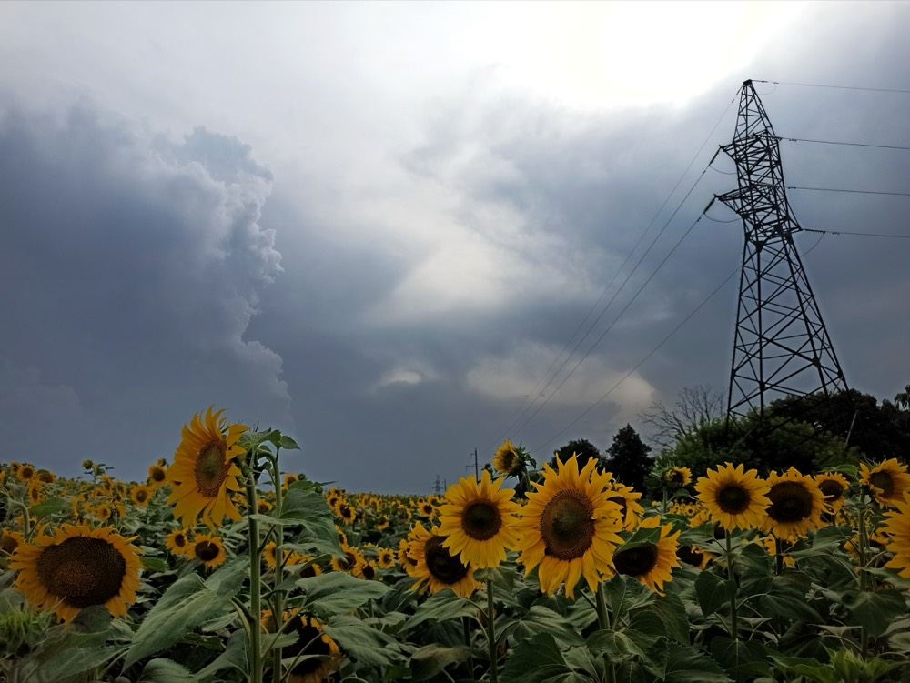

01
1. Data fusion
We integrate Sentinel-2, very high-resolution satellite data, aerial photography, and UAV (drone) data.

Data generation for agribusiness
We transform satellite and aerial data into technical products: productivity/biomass, protein content, soil organic carbon, soil properties, NDVI time series, and automatic weather alerts days in advance.
Resultados validados
120 mil+ ha Área analisadaTrusted by
Selected entities connected to projects and collaborations.
O que fazemos
Equipamos equipas de agronegócio com produtos de dados via satélite, análise com IA e resultados técnicos validados para aumentar produtividade, reduzir risco e apoiar decisões operacionais.

How it works
A workflow designed to convert Earth Observation into operational agribusiness data.

We integrate Sentinel-2, very high-resolution satellite data, aerial photography, and UAV (drone) data.

We apply AI models to estimate biomass, protein content, SOC, soil properties, and NDVI dynamics.

We deliver maps, time series, and tabular outputs for operational and technical decisions.
Solutions
Technical outputs for monitoring and operational planning.

Estimate productivity, biomass, and quality to compare parcels and support management decisions.

Generate soil property layers for technical zoning and agronomic strategy support.

Build NDVI histories for performance analysis, seasonality tracking, and change detection, with 2.5 m spatial-resolution imagery (based on Sentinel-2 super-resolution).

Receive automated weather alerts several days in advance to plan operations and reduce weather risk.
Contact
Send a message and our team will review your request and get back to you.
virtuacrop@virtuacrop.com